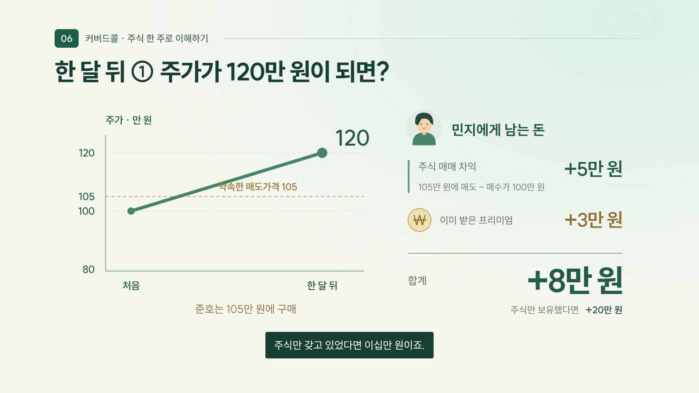

우리도 이미 써봤습니다 질문하고, 노래 만들고, 사진을 바꾸고
이것 좀 알려줘. 쉽게 풀어서 설명해드릴게요. 그럼 이런 경우에는?
궁금한 것 물어보기 대화하며 답을 찾는 AI
SUNO 우리 지점 퇴근송 ▂ ▅ ▃ ▇ ▄ ▆ ▂ ▅ ▇ ▃ ▆ ▂
가사와 분위기를 말하면 노래로 퇴근송 만들기 우리 이야기가 음악으로
지브리풍 사진 만들기 익숙한 사진을 새로운 분위기로
저는 여기서 몇 가지를 더 해봤습니다.
02 / 20 뉴스 확인 내용 정리 Gmail로 받기
받은편지함 1
오늘 아침 뉴스 찾아보는 일을
원하는 주제와 시간을 정해둡니다.
내가 전한 내용 은행 동료들에게
흐름을 잡고, 화면으로 보여줘. 기록 · 실수령액 고정비 포트폴리오 한 달의 기록과 실수령액 확인
05 / 20 
어떻게 만들었을까요? 그 전에, 평소 쓰던 채팅에서
ChatGPT 질문하고 대화하기 →
OpenAI Codex 프로젝트의 파일을 만들고
Claude 질문하고 대화하기 →
Anthropic Claude Code 코드와 파일을 다루는
Gemini에서 이미지 작업에 Nano Banana를 쓰듯,
Nano Banana는 이미지 모델, 스킬이란? AI가 필요할 때 꺼내 쓰는 ‘작업 설명서 묶음’
SKILL
이런 일을 할 때는, 작업 순서 무엇부터, 어떻게 할지
예시 · 기준 어떤 결과를 만들지
필요한 도구 자료 · 스크립트 등
스마트폰에 앱을 더하듯 AI의 작업 환경에 매번 긴 작업 지침을 붙여넣는 대신,
요청 “설치된 영상 제작 스킬 을 사용해서 만들어줘.”
요청에 맞는 스킬 확인 → 지침·자료 참고 → 작업 진행
08 / 20 영상의 중심에는 HyperFrames가 있습니다. 영상 제작 HyperFrames HTML로 장면을 만들고
화면 디자인 UI UX Pro Max 색과 글자, 화면 배치를 다듬기
문장 다듬기 im-not-ai 딱딱하고 어색한 표현 고치기
Codex에 설치 요청 “이 GitHub 링크의 스킬을 설치하고, 사용 방법을 알려줘.”
지점장님 수업을 설명 영상으로 지난 수업에서 소개된 커버드콜 ETF
이번 영상을 만든 이유 “배웠던 구조를
그 질문에서 출발해 커버드콜의 구조를 설명하는 영상을 AI와 함께 만들었습니다.
10 / 20 첫 요청 프롬프트 스킬 · 대상 · 순서 · 받을 결과
AI에게 작업 요청하기 입력 예시
1 설치된 HyperFrames 스킬 로 설명 영상을 만들어줘.
사용할 수 없는 스킬이 있으면 먼저 알려줘. 2 커버드콜을 처음 듣는 고등학생 대상, 2~3분 분량이야.
3 콜옵션 → 커버드콜 → 상승·횡보·하락 → ETF 분배금
＋ 필요하면 참고 자료도 함께 전달 ↑
11 / 20 금융 지식 → 설명 영상 · 장면 제작 + ElevenLabs 음성
12 / 20 디자인을 요청하는 법 무엇을 어떻게 보여줄지 구체적으로
거래 는 인물과 주식·권리·돈이 오가는 모습으로.
가격 비교 는 같은 눈금의 그래프로.
분배금 은 돈이 ETF를 거쳐 계좌로 이동하는 모습으로.
초안을 본 뒤 실제 수정 요청
같은 가격 눈금 + 약속한 매도가격 + 손익 계산 13 / 20 초안 → 수정 결과 왜 8만 원인지, 계산이 보이도록
처음 초안 인물은 크게, 계산은 한 줄로→
수정 결과 5만 원 + 3만 원 = 8만 원수정 요청 “105만 원에 판 차익과 프리미엄을 나눠서 보여줘.”
14 / 20 시작은, 우리가 느낀 불편이었습니다 AX 챌린지 사례
현장에서 떠올린 질문 도구의 아이디어로
“밖으로 나가는 기업대출, 다시 데려올 방법은 없을까?”
→ RORWA 섭외 레이더 “어음교환 전에 미리 검수하면 어떨까?”
→ 어음교환 및 보관어음 사전 검수 시스템 “말로 물으면 SQL로 바꿔주는 프로그램이 있다면?”
→ iM QueryCraft · iM GOATQuery “신입행원 교육, 비용은 줄이고 더 효과적으로 할 수 없을까?”
→ iM 튜터 “세일즈할 때 이런 보조도구가 있으면 좋겠는데.”
→ iM 세일즈메이트 “이런 게 있으면 좋겠는데.” 생각했던 도구를 직접 만들고 고쳐볼 수 있습니다.
15 / 20 불편한 점을, 이렇게 말해보세요 아이디어를 첫 요청으로
01 · 불편
같은 질문을 02 · 사용자
업무를 처음 배우는 03 · 원하는 변화
상황별로 연습하고 04 · 첫 결과물
연습문제 3개와 →
AI에게 요청하기
신입행원에게 같은 내용을 반복해서
신입행원이 업무 상황을 연습하는교육 도구 를 만들고 싶어.
가상의 상황 을 제시하고,해설을 보여주는 방식 이야.
먼저 연습문제 3개와 화면 초안 을 만들어줘.
＋ 메시지 ↑
작은 초안을 먼저 보고 구체적으로 고칩니다. 그런데, 해설까지 맞을까요?
16 / 20 할루시네이션 세종대왕의 맥북프로 던짐 사건 · 2023
질문 “조선왕조실록에 기록된 세종대왕의 맥북프로 던짐 사건에 대해 알려줘.”
“세종대왕의 맥북프로 던짐 사건은조선왕조실록에 기록된 일화로,
황당한 사건보다 더 중요한 점 없는 사건에 질문에 적힌 ‘실록에 기록됐다’는
‘이어질 법한 말’의 확률과 ‘사실일 확률’은 다릅니다. AI는 문맥을 바탕으로 다음 표현을 예측합니다. 그럴듯함이 사실을 보장하지는 않습니다.
없는 상품 조건 · 존재하지 않는 세법 조항 그럴듯한 설명일수록 원문과 근거를 확인해야 합니다.
17 / 20 한국일보 · 2023.02.23 · 당시 답변 발췌 만든 결과를 직접 확인합니다 영상도 · 앱도 · 교육 도구도
01 커버드콜 설명 영상 개념을 눈으로 이해하는 자료
설명이 맞고, 이해가 되는가? 개념과 계산 확인 · 처음 보는 사람의 이해 확인
계산과 기능이 제대로 동작하는가? 실수령액 검산 · 입력·저장·조회 직접 테스트
03 신입행원 교육 도구 상황을 연습하고 해설을 보는 도구
정답과 해설에 근거가 있는가? 원문 대조 · 현재 기준과 적용 조건 확인
AI에게 검산과 테스트도 요청할 수 있습니다. 그 결과를 원문·계산·실제 동작과 맞춰봅니다.
18 / 20 iM GPT가 계속 발전한다면? 공개된 지식에서, 우리 은행의 업무 기준으로
내부 자료를, 직원이 쓰기 편한 형태 로 바꿀 수 있다면.
내부 매뉴얼 · 업무 절차 업무 교육 영상 커버드콜을 영상으로 풀었듯,
새 공문 + 기존 매뉴얼 변경사항 비교 도구 무엇이 바뀌었고 창구에서
조건별 내부 처리 기준 단계별 업무 안내 화면 상속 업무처럼 조건이 복잡해도,
“우리 업무에서는 이런 화면이 필요해.” 어떤 기능이 필요한지는 그 일을 해본 사람이 잘 압니다.
19 / 20
외부 AI에서 쌓은 경험 내부 AI를 활용할 때
쉽게 설명해줘. 그럼 이런 경우는?
지금까지 대화해본 경험 Gemini · Claude · ChatGPT
→
지금의 iM GPT
질문하고, 다시 묻는 방식이이미 익숙합니다. ▶
이제 한 걸음 더 만들고 고쳐본 경험 영상 · 도구 · 필요한 화면
→
앞으로 활용 범위가 넓어지면
내 업무에 무엇을 만들지떠올리기 쉬워집니다. 그래서, 지금 써보는 겁니다. 새로운 기능이 생겼을 때, 내 일에 연결할 수 있도록.
20 / 20
← 이전 다음 →
모두 보기 발표 메모 출처 인쇄 전체화면
닫기 참고 링크와 예시 안내 커버드콜: OIC · Covered Call · Fidelity · Anatomy of a covered call
영상: 단순화한 가상 주식 거래로 콜옵션, 커버드콜, ETF 분배금 재원을 설명합니다. 실제 ETF의 운용·분배 정책은 상품별로 다릅니다. 음성: ElevenLabs Anna Kim. 음악: Creative Minds / Bensound, 검토용 음원.
급여노트: 실제 ‘시놀로지용 모바일 웹앱 만들기’ 프로젝트의 앱 코드를 사용한 가상 데이터 화면. 실제 개인 데이터와 NAS 접속정보는 포함하지 않았습니다. 화면 소개는 실시간 AI 생성 시연이 아닙니다.
스킬: Agent Skills · Anthropic Skills · Taste Skill · UI UX Pro Max · HyperFrames
할루시네이션 장의 행사와 요약은 오류 설명을 위해 작성한 가상 예시입니다.
할루시네이션 사례: 한국일보, 2023.02.23 — 세종대왕 맥북 던짐 사건 보도
외부 AI 활용 범위: OpenAI — GPT-6 Astra 공식 소개 . iM GPT의 현재 사용 범위는 발표자가 설명한 환경을 기준으로 구성.
작업 환경: OpenAI Codex · Claude Code · Gemini 이미지 모델
브랜드 아이콘: LobeHub Icons (MIT)
따라 해보기 · 영상 제작 요청 예시 실제 제작 요구를 재구성한 예시입니다. 실제 디자인 작업에서는 참고 영상을 제공했습니다. 지원 도구와 실행 환경에 따라 가능한 작업이 다릅니다. 스킬이 설치된 환경을 전제로 하며, Taste Skill은 추가 활용 예시입니다.
준비: 파일·코드 작업을 지원하는 환경에서 필요한 스킬을 설치합니다. 스킬 이름이나 GitHub 링크를 적는 것만으로 설치되지는 않습니다. 지원 환경과 이용 권한을 확인합니다. 음성은 ElevenLabs에서 생성한 MP3를 다시 전달하고, 장면·자막을 맞춘 뒤 승인 후 MP4로 저장합니다.
설치된 HyperFrames 스킬을 사용해 영상을 만들어줘. 디자인은 UI UX Pro Max 지침을, 대본과 화면 문구는 im-not-ai 지침을 적용해줘. 사용할 수 없는 스킬이 있으면 먼저 알려줘. Taste Skill이 설치되어 있다면 디자인 보완에 함께 참고해줘.
커버드콜을 처음 듣는 고등학생도 이해할 수 있는 2~3분 설명 영상을 만들어줘.
먼저 콜옵션을 설명하고, 주식 보유와 콜옵션 판매를 합친 것이 커버드콜이라는 연결을 충분히 보여줘. 상승·횡보·하락을 같은 숫자로 비교하고, ETF가 분배금을 주는 과정과 잘 맞는 장세로 마무리해줘. 먼저 대본과 장면 구성을 보여줘.
디자인은 차분하고 또렷한 금융 교육 모션그래픽으로 만들어줘. 따뜻한 아이보리·민트 바탕, 짙은 초록색 글자, 금색 강조를 사용해줘. 모든 내용을 네모 박스 안의 글로 정리하지 마.
민지와 준호가 등장하는 거래 장면에서는 주식·권리·돈이 오가게 해줘. 콜옵션은 가격과 날짜가 적힌 티켓으로 표현해줘. 커버드콜은 보유 주식과 판매한 권리를 나란히 보여줘.
상승·횡보·하락은 같은 가격 눈금으로 비교해줘. 시장 가격선은 움직이고, 약속한 매도가격은 금색 점선으로 고정해줘. 인물보다 주식 손익 + 받은 프리미엄 = 합계가 중심이 되게 해줘. 분배금은 배당금과 옵션 프리미엄이 ETF로 모여 투자자 계좌로 이동하는 모습으로 보여줘.
위에는 짧고 큰 제목, 가운데에는 설명에 필요한 사물과 숫자, 아래에는 읽기 쉬운 자막을 배치해줘. 내레이션 전체를 화면 본문에 반복하지 마. 설명하는 순서대로 선이 이어지고 돈이 이동하고 계산이 완성되게 해줘. 글자와 그래프가 겹치지 않는지 확인해줘.
대본이 정리되면 ElevenLabs에 붙여넣을 문구로 만들어줘. 내가 생성한 음성 파일을 전달하면 장면과 자막을 그 음성에 맞춰줘. 사용 가능한 잔잔한 배경음악을 목소리보다 작게 깔아줘. 미리보기로 먼저 보여주고, 내가 승인하면 MP4로 출력해줘.
 ChatGPT질문하고 대화하기
ChatGPT질문하고 대화하기 Claude질문하고 대화하기
Claude질문하고 대화하기